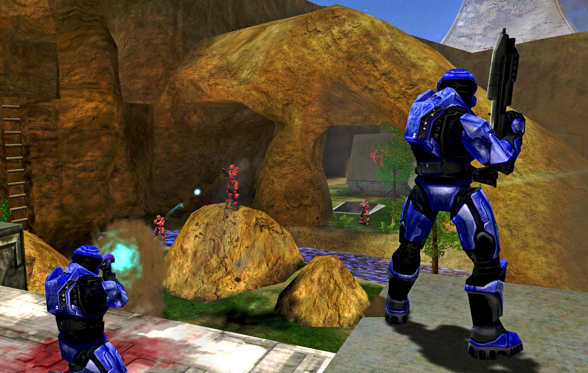
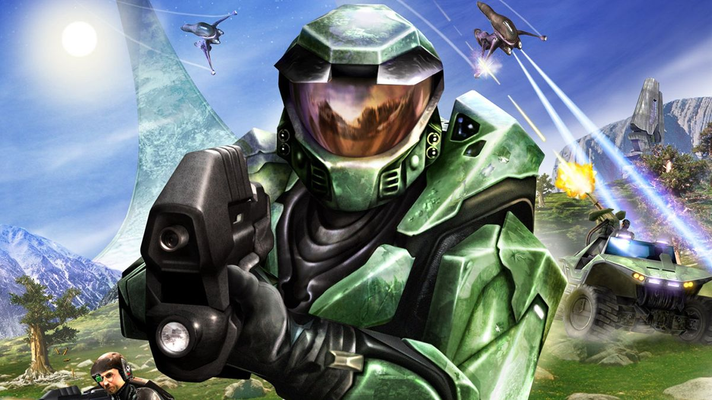

Halo: Combat Evolved is a 2001 first-person shooter video game developed by Bungie and published by Microsoft Game Studios for the Xbox. It was released as a launch game for Microsoft's Xbox video game console on November 15, 2001. The game was ported to Microsoft Windows and Mac OS X in 2003. It was later released as a downloadable Xbox Original for the Xbox 360. Halo is set in the twenty-sixth century, with the player assuming the role of the Master Chief, a cybernetically enhanced supersoldier. The Chief is accompanied by Cortana, an artificial intelligence. Players battle aliens as they attempt to uncover the secrets of the eponymous Halo, a ring-shaped artificial world.
Bungie began the development of what would eventually become Halo in 1997. Initially, the game was a real-time strategy game that morphed into a third-person shooter before becoming a first-person shooter. During development, Microsoft acquired Bungie and turned Halo into a launch game for its first video game console, the Xbox. Halo was a critical and commercial success and is often praised as one of the greatest video games ever made. The game's popularity led to labels such as "Halo clone" and "Halo killer", applied to games either similar to or anticipated to be better than it. Its sequel, Halo 2, was released for the original Xbox in 2004, and the game spawned a multi-billion-dollar multimedia franchise that incorporates games, books, toys, and films.
More than six million copies had been sold worldwide by November 2005. A remaster of the game, Halo: Combat Evolved Anniversary, was released for Xbox 360 by 343 Industries on the 10th anniversary of the original game's launch. Anniversary was re-released alongside the original competitive multiplayer as part of Halo: The Master Chief Collection in 2014.
Gameplay

Halo: Combat Evolved is a first-person shooter (FPS) game in which players primarily experience gameplay in a 3D environment from a first-person view. The player can move around and look up, down, left, or right. The game features vehicles, ranging from armored 4×4s and tanks to alien hovercraft and aircraft, many of which can be controlled by the player. The game switches to a third-person perspective during vehicle use for pilots and mounted gun operators; passengers maintain a first-person view. The game's heads-up display includes a "motion tracker" that registers moving allies, moving or firing enemies, and vehicles, in a certain radius of the player.
The player character is equipped with an energy shield that nullifies damage from weapons fire and forceful impacts. The shield's charge appears as a blue bar in the corner of the game's heads-up display, and it automatically recharges if no damage is sustained for a brief period. When the shield is fully depleted, the player becomes highly vulnerable, and further damage reduces the hit points of their health meter. When this health meter reaches zero, the character dies and the game reloads from a saved checkpoint. Health can be replenished through the collection of health packs scattered around the game's levels.
Halo's arsenal consists primarily of science fiction weapons. The game has been praised for giving each weapon a unique purpose, thus making each useful in different scenarios. For example, plasma weapons need time to cool if fired too rapidly, but do not need to be reloaded and must be discarded upon depletion of their batteries, whereas conventional firearms cannot overheat, but require reloading and ammunition. In contrast to the large weapon inventories of contemporary FPS games, Halo players may carry only two weapons at once, calling for players to make tactical decisions when managing firearms.
Halo departs from traditional FPS conventions by not forcing the player to holster their firearm before deploying grenades or melee-range blunt instruments; instead, both attacks can be utilized while a gun is still equipped, supplementing small-arms fire. There are two different types of grenades; the fragmentation grenade bounces and detonates quickly, whereas the plasma grenade adheres to targets before exploding.
The game's main enemy force is the Covenant, a group of alien species allied by belief in a common religion. Their forces include Elites, fierce warriors protected by recharging energy shields similar to the player's own; Grunts, which are short, cowardly creatures who are usually led by Elites in battle, and often flee in terror instead of fighting in the absence of a leading Elite; Jackals, who wear a highly durable energy shield on one arm and a plasma pistol on the other; and Hunters, large, powerful creatures with thick armor plates that cover the majority of their bodies and a large assault cannon that fires explosive rounds of green plasma. A secondary enemy is the Flood, a parasitic alien life form that appears in several variants later in the game. Another enemy is the Sentinels, aerial robots designed by an extinct race called the Forerunners to protect their structures and prevent Flood outbreaks. Sentinels are able to hover around in enclosed spaces and produce an energy shield when under attack. They lack durability, but use powerful laser weapons.
The player is often aided by United Nations Space Command (UNSC) Marines, and the crew of the ship, who offer ground support, such as following the player and mimicking their tactics, and manning gun turrets or riding shotgun while the player is driving a vehicle. Marine AI and crew member AI are differentiated by their uniforms, but also act distinctly, the marines engaging aggressively while the crew members often cower or fire while retreating to cover. If the player kills too many of their teammates, they end up turning on the player and attacking him back.
Multiplayer

A split screen mode allows two players to cooperatively play through Halo's campaign. The game also includes five competitive multiplayer modes, which all can be customized, for between two and 16 players; up to four players may play split-screen on one Xbox, and further players can join using a "System Link" feature that allows up to four Xbox consoles to be connected together into a local area network. Halo lacks artificially intelligent game bots, and was released before the launch of the Xbox Live online multiplayer service; therefore LAN parties are needed to reach the game's 16-player limit, a setup that was a first for a console game, but was often deemed impractical by critics. Aside from this limitation, Halo's multiplayer components were generally well received, and it is widely considered one of the best multiplayer games of all time.
Although the Xbox version of Halo lacks official support for online multiplayer play, third-party packet tunneling software provide unofficial ways around this limitation. The Windows and Macintosh ports of Halo support online matches involving up to 16 players and include multiplayer maps, not in the original Xbox release. However, co-operative play was removed from the ports because it would have required large amounts of recoding to implement. In April 2014, it was announced that GameSpy's servers and matchmaking, on which Halo PC relied, would be shut down by May 31 of the same year. A team of fans and Bungie employees announced they would produce a patch for the game to keep its multiplayer servers online. The patch was released on May 16, 2014.
Story

Setting
Halo: Combat Evolved takes place in a 26th-century science fiction setting. Faster-than-light travel called slip-space allows the human race to colonize planets other than Earth. The planet Reach serves as an interstellar hub of scientific and military activity. The United Nations Space Command (UNSC) develops a secret program to create augmented supersoldiers known as Spartans. More than twenty years before the beginning of the game, a technologically advanced collective of alien races called the Covenant begins a religious war against humanity, declaring them an affront to their gods. Humanity's military experiences a series of crushing defeats; although the Spartans are effective against the Covenant, they are too few in number to turn the tide. In 2552, Covenant forces attack Reach and destroy the colony. The starship Pillar of Autumn escapes the planet with the Spartan Master Chief Petty Officer John-117 on board. The ship initiates a jump to slip-space, hoping to lead the enemy away from Earth.
Plot
The game begins as the Pillar of Autumn exits slip-space and its crew discovers a large ringworld structure of unknown origin. The Covenant pursues the Autumn and attacks. With the ship heavily damaged, the Autumn's captain, Jacob Keyes, entrusts the ship's artificial intelligence (AI) known as Cortana to Master Chief in order to prevent the Covenant from discovering the location of Earth. Keyes orders the crew to abandon the Autumn and pilots the ship to a crash-landing on the ringworld.
On the ring's surface, Master Chief and Cortana rescue scattered survivors and help organize a counter-offensive against the Covenant. Learning that Keyes has been captured by the Covenant, Master Chief and a small contingent of soldiers rescue him from the Covenant cruiser Truth and Reconciliation. Keyes reveals that the Covenant call the ringworld "Halo" and that they believe it to be a weapon. Intent on stopping the Covenant from using Halo, Keyes searches for a potential weapons cache, while Master Chief and Cortana mount an assault on the ringworld's control room. Cortana enters Halo's computer systems and, after discovering something horrifying, sends Master Chief to find and stop Keyes from continuing his search and uncovering what lies within the ring.
Searching for the captain, Master Chief encounters a new enemy, the parasitic Flood. The release of the Flood prompts Halo's caretaker, the AI 343 Guilty Spark, to enlist Master Chief's help in activating Halo's defenses. After Master Chief retrieves the ring's activation index, 343 Guilty Spark transports him back to Halo's control room. Cortana intervenes before Master Chief can activate the ring; she has discovered the purpose of the installation is to destroy all sentient life in the galaxy, starving the Flood of potential hosts. When Cortana refuses to surrender Halo's activation index, 343 Guilty Spark attacks her and Master Chief.
To stop Halo's activation, Master Chief and Cortana decide to destroy the installation. Needing Keyes’ neural implants to destroy the Autumn and Halo with it, Master Chief returns to the Truth and Reconciliation. He finds that Keyes has been assimilated by the Flood, and retrieves the neural implant from the captain's remains. After 343 Guilty Spark stops them from using Autumn's self-destruct, Master Chief and Cortana destabilize the Autumn's reactors instead, narrowly escaping the ensuing detonation in a fighter. Cortana justifies their actions to destroy the Covenant fleet and stop the Flood threat and believes the fight is finished, but Master Chief states they are only getting started. In a post-credits scene, 343 Guilty Spark is seen floating in space, having survived the ring's destruction.